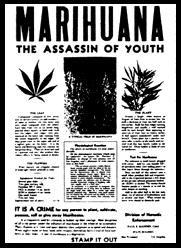

|  |
| |
The 1938-1944 New York City “LaGuardia Marijuana Report” IB
After the 1938-1944 New York City “LaGuardia Marijuana Report” refuted his argument, by reporting that marijuana caused no violence at all and citing other positive results, Harry J. Anslinger, in public tirade after tirade, denounced Mayor Fiorella LaGuardia, the New York Academy of Medicine, and the doctors who researched the report.
Anslinger proclaimed that these doctors would never again do marijuana experiments or research without his personal permission, or be sent to jail!
He then used the full power of the United States government, illegally, to halt virtually all research into marijuana while he blackmailed the American Medical Association (AMA)* into denouncing the New York Academy of Medicine and its doctors for the research they had done.
* Why, you ask, was the AMA now on Anslinger’s side in 1944-45, after being against the Marijuana Tax Act in 1937? Answer: since Anslinger’s FBN was responsible for prosecuting doctors who prescribed narcotic drugs for what he, Anslinger, deemed illegal purposes, they (the FBN) had prosecuted more than 3,000 AMA doctors for illegal prescriptions through 1939.
In 1939, the AMA made specific peace with Anslinger on marijuana. The results: Only three doctors were prosecuted for illegal drugs of any sort from 1939 to 1949.
To refute the LaGuardia report, the AMA, at Anslinger’s personal request, conducted a 1944-45 study “of the experimental group 34 Negroes and one was white” (for statistical “control”) who smoked marijuana became disrespectful of white soldiers and officers in the segregated military. (See Appendix in the paper version of this book, Army Study of Marijuana,” Newsweek, Jan. 15, 1945.)
This technique of biasing the outcome of a study is known among researchers as “gutter science.”

the authorized on-line version of Jack Herer’s “The Emperor Wears No Clothes”
| previous page | Chapter 5 | next page |
|
 |
 |
 |
 |